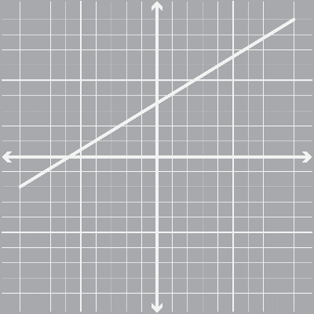
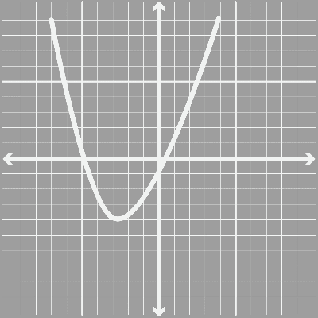

Conceptos básicos
En este tema aprendí a comprender los conceptos fundamentales de las funciones. El dominio hace referencia al conjunto de valores de entrada posibles, mientras que el ámbito describe los valores de salida. También exploré los términos imágenes, pre-imágenes, intersección con los ejes y los intervalos de monotonía. La comprensión de estos conceptos fue esencial para poder analizar las funciones de manera precisa y entender su comportamiento.
-
Dominio
El dominio de una función es el conjunto de todos los valores posibles que pueden ser asignados como entradas. En mis prácticas, aprendí que identificar el dominio es crucial para entender cómo se comporta una función.
-
Ámbito
El ámbito, o rango, es el conjunto de todos los posibles resultados de una función. Esta definición me permitió entender cómo una función se comporta dependiendo de sus entradas.
-
Imágenes
Las imágenes son los valores de salida de una función. Aprendí a identificar cuáles son las imágenes de una función a partir de su dominio.
-
Pre-imágenes
Son los valores de entrada que producen una salida específica. Este concepto me resultó interesante, ya que me permitió rastrear los valores que producen determinados resultados en una función.
-
Intersección con los ejes
Es el punto en el que la función cruza los ejes coordenados. Comprender estos puntos es fundamental al analizar gráficas de funciones.
-
Intervalos de monotonía
Se refieren a los intervalos donde la función es creciente o decreciente. Aprendí que estos intervalos son esenciales para comprender el comportamiento de la función a lo largo de su dominio.
-
Signos
Los signos de una función son importantes para entender si la función toma valores positivos o negativos en diferentes partes de su dominio. Esto fue muy útil para identificar las soluciones de ecuaciones relacionadas.
-
Dominio máximo
El dominio máximo se refiere al conjunto más amplio de valores de entrada para los cuales la función está definida. Durante este módulo, aprendí a identificar el dominio máximo en funciones complejas.
Análisis de gráficas de funciones
Cómo leer y entender las gráficas de las funciones
A medida que avanzaba en este tema, pude practicar cómo interpretar gráficas, identificar puntos clave como interceptos, máximos, mínimos, y la forma general de las curvas. Este análisis es fundamental para entender cómo se comporta la función en diferentes rangos de su dominio.
Gráfica de función estándar
Entendiendo las Funciones Más Comunes
Durante este tema, nos centramos en las funciones lineales y cuadráticas, que son dos de las formas más comunes y fundamentales de funciones. Estudiar sus gráficas nos permite entender cómo se comportan estas funciones de manera visual, ayudándonos a identificar patrones, comportamientos y puntos clave como intersecciones y pendientes. La comprensión de estas gráficas es esencial para abordar problemas más complejos en matemáticas y otras áreas.
-
Función Lineal
Una función lineal es una función matemática que se representa mediante una línea recta. Su fórmula general es:
f(x) = mx + b
Ejemplo: f(x) = 2x + 1
La gráfica de esta función es una línea recta con pendiente 2 y que corta el eje "𝑦" en el punto (0,1).
 -
Función Cuadrática
Una función cuadrática es una relación matemática donde el valor de la variable dependiente (𝑦) o 𝑓(𝑥) se obtiene elevando al cuadrado la variable independiente (𝑥), además de sumar o restar otros términos lineales o constantes.
f(x) = ax2 + bx + c
Ejemplo: f(x) = x2 − 4
Esta gráfica es una parábola que abre hacia arriba y tiene su vértice en el punto (0,−4).

Composición de funciones
Historia de las funciones y cómo nos ayudan hoy
Aprendí cómo combinar funciones de manera que el resultado de una función sea el valor de entrada de otra. Este tema fue muy práctico, ya que la composición de funciones se utiliza en problemas complejos donde se requieren múltiples pasos de procesamiento de datos
Clasificación de funciones
Inyectivas, Sobreyectivas, Biyectivas
Inyectivas
Una función inyectiva es aquella que asigna elementos distintos del dominio a elementos distintos del codominio. En otras palabras, no hay dos elementos del dominio que tengan la misma imagen.
Sobreyectivas
Una función sobreyectiva es aquella que asigna cada elemento del codominio a al menos un elemento del dominio. Dicho de otra manera, todos los elementos del codominio son alcanzados por la función.
Biyectivas
Una función biyectiva es una función que es a la vez inyectiva y sobreyectiva. En otras palabras, una función biyectiva no repite valores en la imagen (es inyectiva) y cubre todo el codominio (es sobreyectiva)
Aplicaciones
¿Dónde se usan las funciones?
El módulo también me permitió comprender cómo las funciones se aplican en diferentes áreas como la economía, la ingeniería, la física, y la informática. Me di cuenta de que las funciones son esenciales para modelar situaciones del mundo real, como las tasas de crecimiento, los rendimientos financieros, y las relaciones entre variables físicas